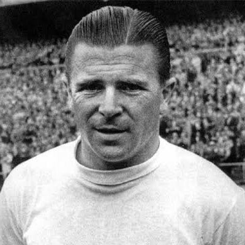
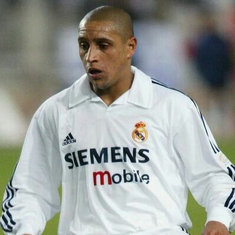
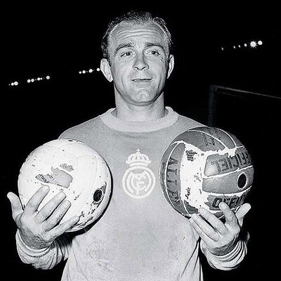
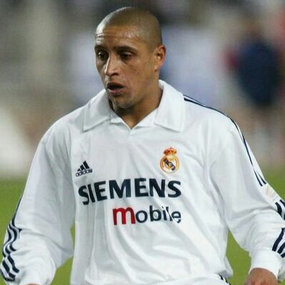
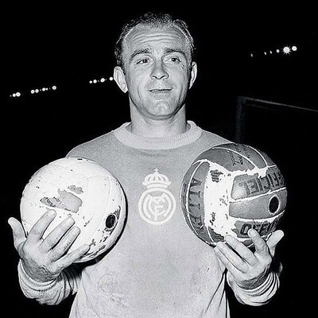

Poucos foram os jogadores, que sendo considerados craques nas suas gerações, não jogaram no Real Madrid, dando como exemplos o caso de Pelé, Eusébio, Cruijff, Maradona e Messi. No Real, houve uns que se destacaram mais do que outros, mas talvez os nomes mais sonantes tenham sido Dí Stéfano, Figo, Puskas, Zidane, Cristiano Ronaldo e Ronaldo Fenómeno.





 


